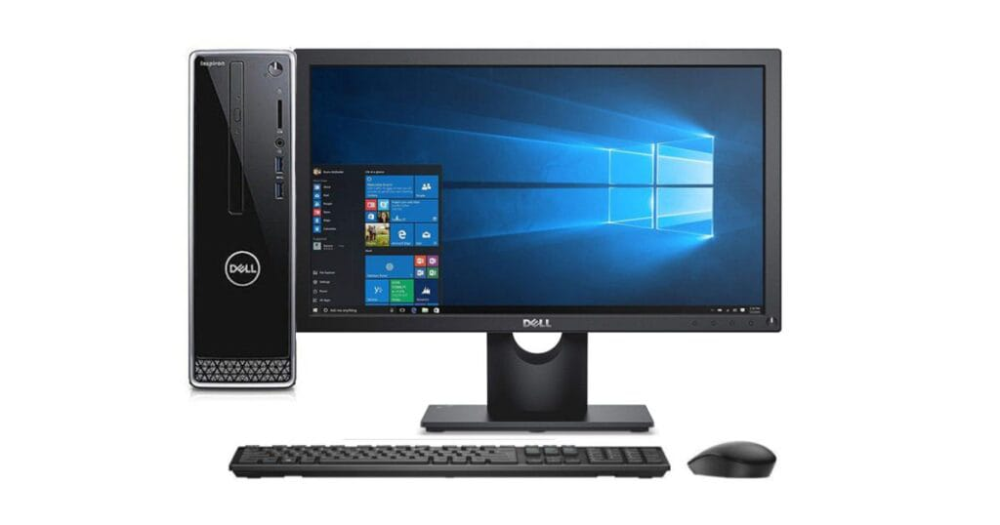

Komputer generasi kelima dikenal sebagai era kecerdasan buatan (Artificial Intelligence).
Sistem komputasi modern tidak hanya bekerja lebih cepat, tetapi juga memiliki kemampuan
untuk belajar, mengenali pola, memahami bahasa manusia, serta membuat prediksi.

Ciri-ciri Komputer Generasi Kelima/h3>
Penggunaan Artificial Intelligence (AI).
Memiliki kemampuan machine learning dan deep learning.